This blog post is supposed to be a follow-up to Machine Learning Super-Resolution - An Introduction to AI Upsampling. If you somehow arrived at this page, I strongly advise you to read that other page first if you haven't done it already.
Assuming you already know how Convolutional Neural Networks work, and that you have a relatively good understanding of image resampling, we can essentially summarise what we're doing here as "learning how to restore high-frequency information". Images look relatively blurry when we upscale them with FIR filters, this happens because we do not have all the high-frequency components required for abrupt changes in signal intensity. The super-resolution blog post linked above gives a good overview of the basic SISR CNNs, and this one will cover the more "state of the art" techniques employed by recent works.
The SISR CNNs can be classified as either PSNR-oriented, which attempt to reconstruct the image as close as possible and minimise a pixel-wise loss function between the generated HR images and the reference HR images, and perceptually driven networks, which attempt to generate HR images that look like real images to the human visual system. These networks are usually GAN based and the rationale behind them comes from the fact that minimising pixel-wise differences usually results in smooth images devoid of texture.
The following image shows the difference between perceptually-driven and PSNR-oriented SISR CNNS:
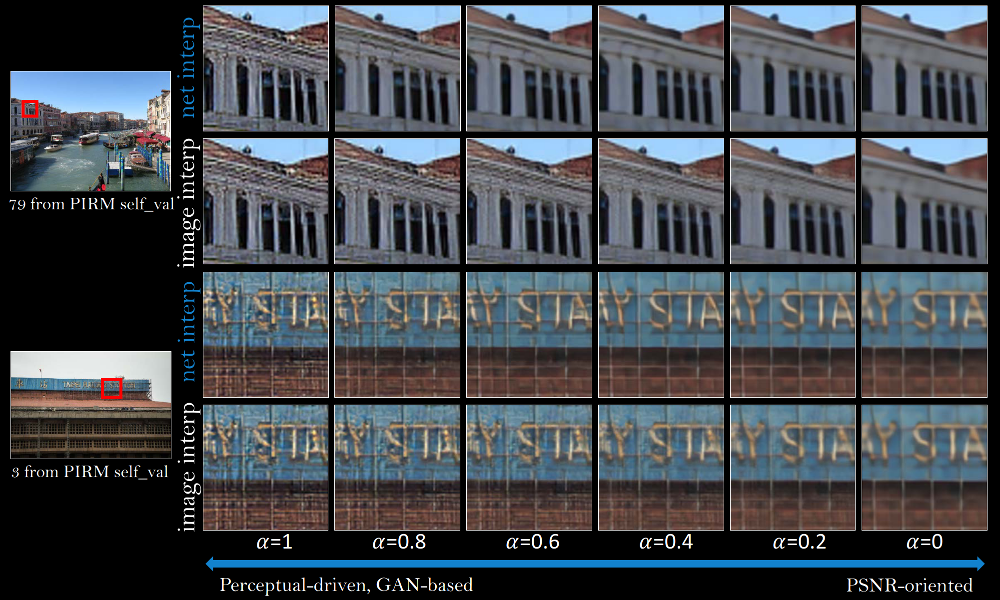
In this blog post, I'll stick to the state of the art PSNR-oriented networks. I might make a part 3 about GANs in the future...
EDSR stands for Enhanced Deep Residual Networks for Single Image Super-Resolution and it expands the residual training approach from VDSR into the internal layers with short-skip connections.
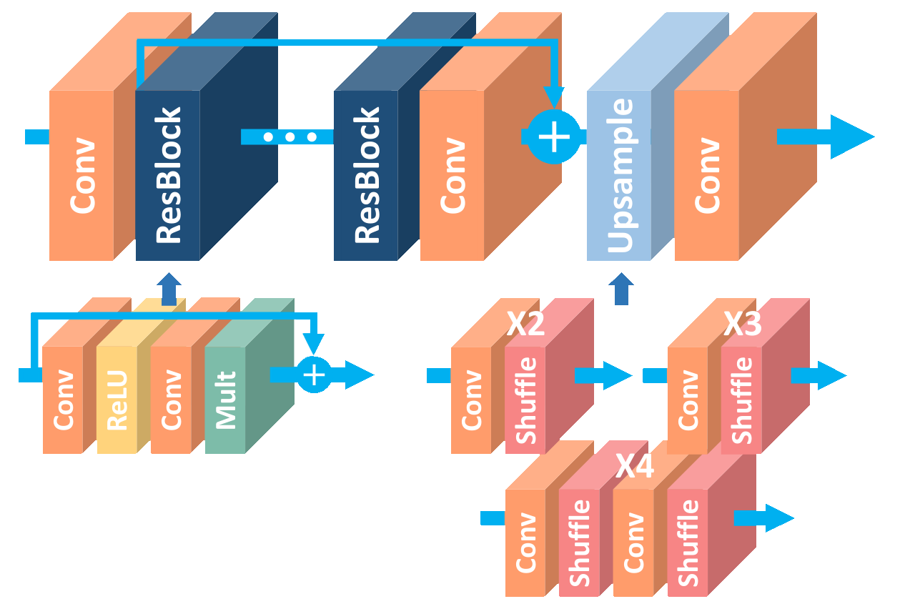
This architecture treats the features as a set of images that are gradually improved throughout the residual blocks until they resemble the HR reference. Upsampling is handled by the depth-to-space/pixel-shuffle operation introduced by ESPCN.
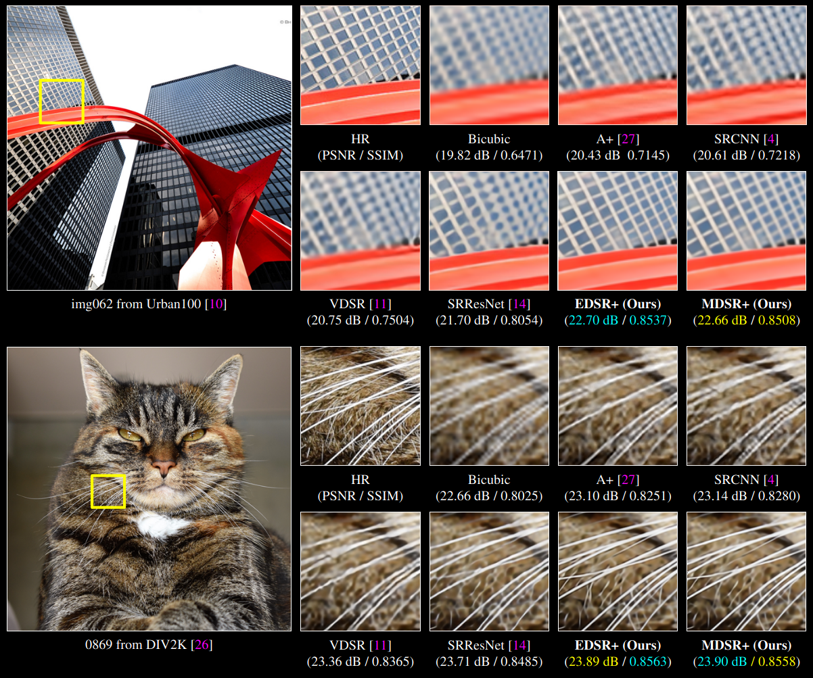
RDN stands for Residual Dense Network and it expands the residual training approach from EDSR with concatenations. According to the authors, previous networks neglect to fully use the information from each convolutional layer and therefore are incapable of capturing hierarchical features of varying scales, viewing angles and aspect ratios
To address this issue, RDN introduces the residual dense block. RDB consists of dense connected layers and local feature fusion (LFF) with local residual learning (LRL). The output of one RDB has direct access to each layer of the next RDB, resulting in a contiguous state pass. Each convolutional layer in a RDB has access to all the subsequent layers and passes on the information that needs to be preserved.
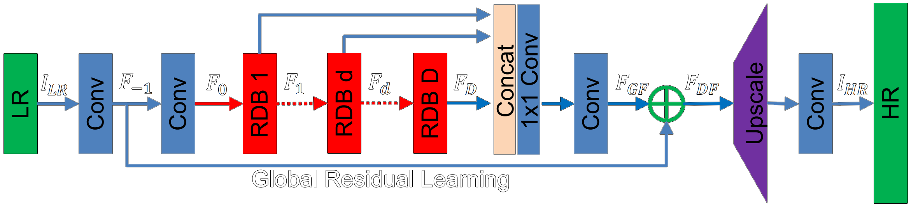
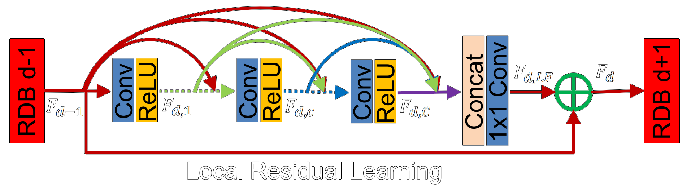
RDN receives the LR image as its input and performs the depth-to-space operation from ESPCN to upscale the LR feature maps. The RDB allows the network to recreate fine details with much better precision than previous works.
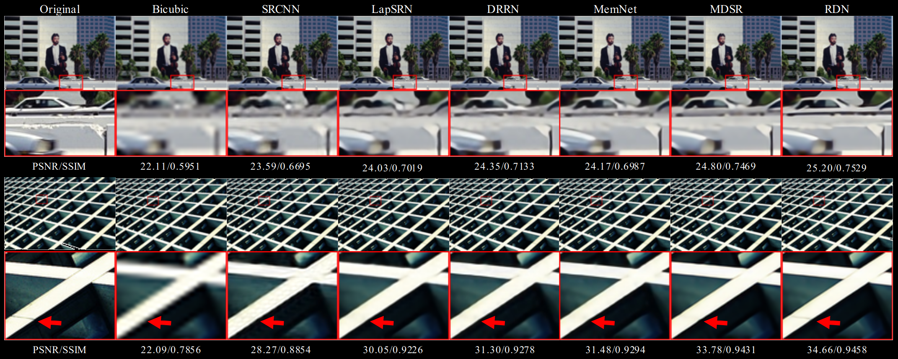
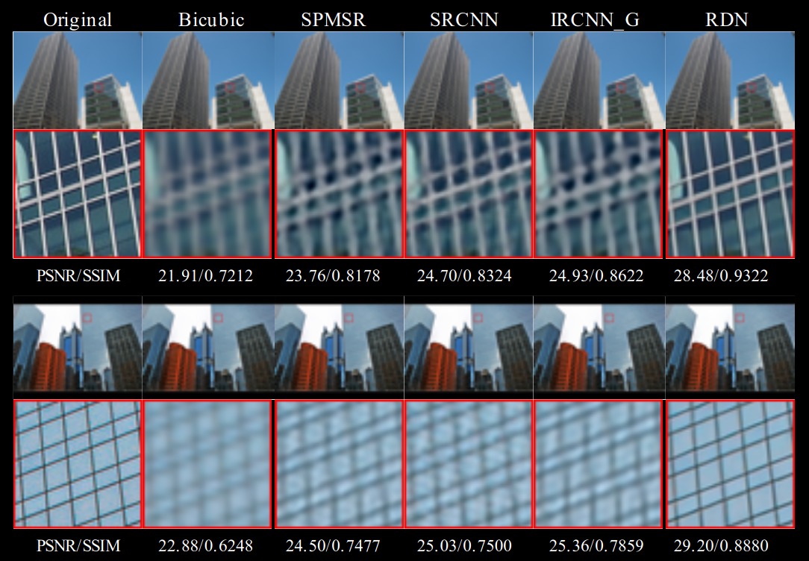
RCAN stands for Residual Channel Attention Networks and it introduced attention mechanisms into the SR problem. Attention is being widely used in several other areas within machine learning, especially in natural language processing and it was the basis for the development of the transformer. Attention mechanisms can be used in the SR problem to adaptively rescale features by considering interdependencies among feature channels. In other words, allowing the network to give more emphasis to informative pixels.
The channel attention block introduced by RCAN first shrinks a HxW input with C features maps using global average pooling. The resulting layer has a dimension of 1x1xC. The next step is a channel downscaling convolutional layer with fewer output feature maps that shrinks the number of channels to C/r. Afterwards, the number of channels is brought back to C with another convolutional layer, and then goes through a sigmoidal activation layer before an element-wise multiplication with the original HxWxC input layer.
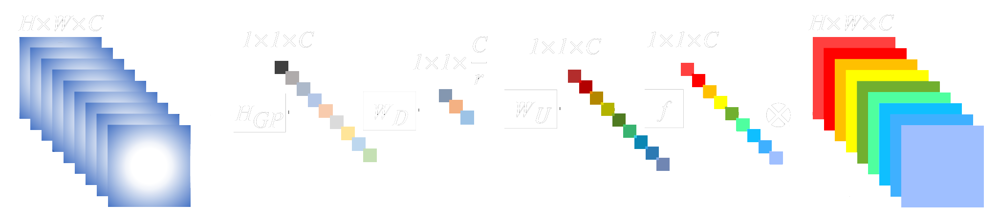
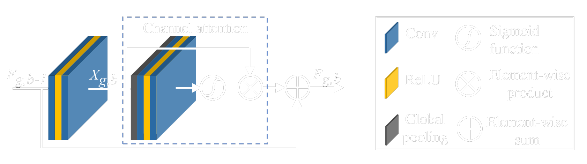
The network arranges the residual-channel attention blocks in a way that allows residual training to be done in multiple levels. Unlike RDN, RCAN does not employ channel concatenation. Instead, element-wise sums are used whenever information needs to be passed to the following layers. This reduces the amount of redundant information being passed on and also decreases the number of parameters since concatenation linearly increases the size of the filters.
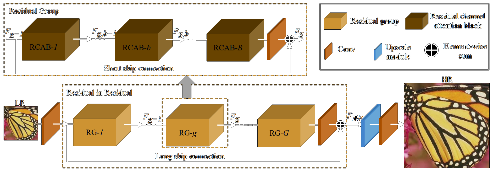
The authors evaluated the contributions provided by the addition of short and long skip connections for deep residual training, as well as the improvement provided by their channel attention mechanism.
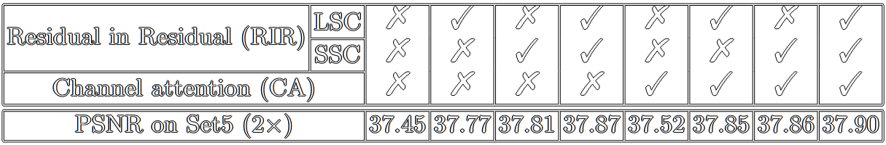
The resulting architecture with channel attention, short skip and long skip connections achieved state of the art reconstruction quality, and therefore the best PSNR and SSIM scores when compared to previous works.
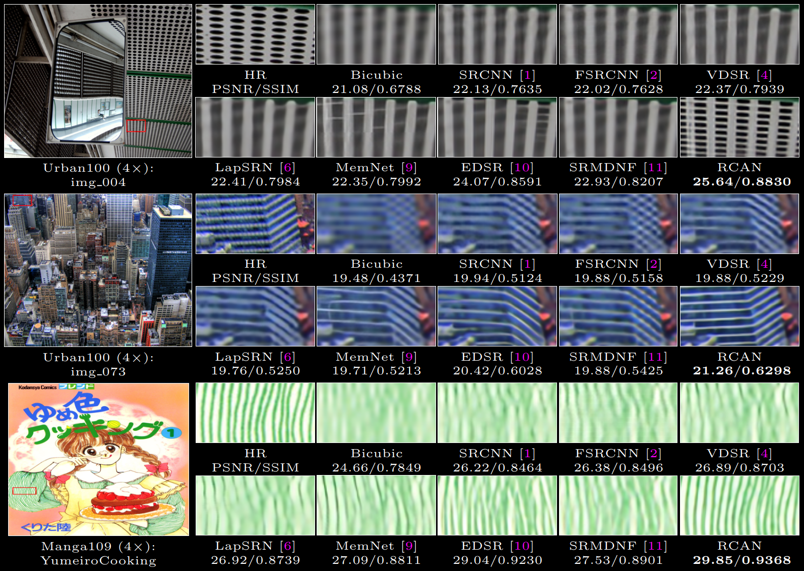
While several techniques have been developed to tackle the super-resolution problem, convolutional neural networks are currently the state of the art both in reconstruction quality and perceptual fidelity. Deep complex networks can recreate detail and create outputs that look extremely close to real images, but this comes as a computational cost. The following image depicts the relationship between the number of operations in the networks and their performance:
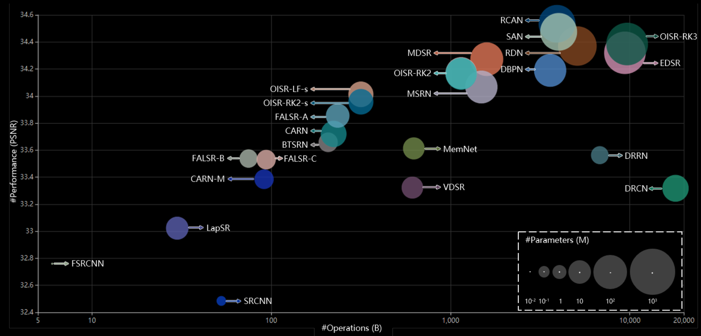
The following table gives an overview of the various SR CNNs:
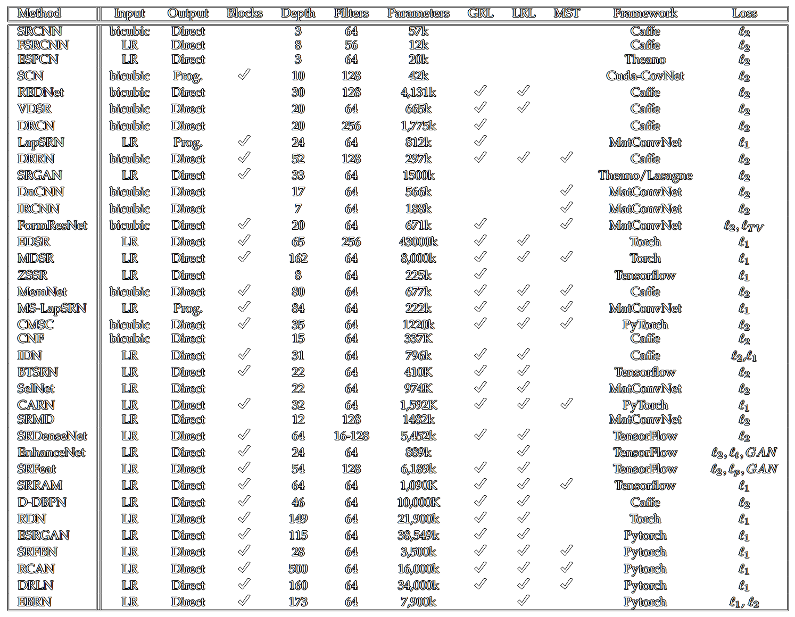
Using RCAN as the starting point since it's the best performing model, I first made its size smaller by using only 2 RGs with 5 RCABs each. The convolutional layers output 64 feature maps and they all use 3x3 filters with the exception of the layers related to the attention mechanism (1x1 filters are used to contract and expand the number of feature maps).
The network was trained with 200 anime screenshots. The input images were downscaled with a box filter to 480x270 and the output ones downscaled to 960x540. The box filter does not introduce any artifacts other than some aliasing when it's used to downscale images by an integer scaling factor, and using smaller images helps the network a little bit since we attenuate the high-frequency noise and force it to learn how to reconstruct spatially small details.
These training images look like this:
To make training more efficient and consume less memory, these images were reduced to 48x27 and 96x54 patches (100 per image).
The network receives and outputs all 3 RGB channels.
# HUSBANDO_2X RCAN 2RG 5RCAB
import numpy as np
import tensorflow as tf
import cv2
import glob
from tensorflow import keras
from tensorflow.keras.models import Sequential
from tensorflow.keras.layers import Conv2D
from tensorflow.keras.layers import LeakyReLU
from tensorflow.keras.layers import ReLU
from tensorflow.keras.layers.experimental.preprocessing import Rescaling
def ssim_metric(y_true, y_pred):
ssim_1 = tf.image.ssim(y_true, y_pred, max_val=255)
return tf.reduce_mean(ssim_1)
# Start of the Model
inputs = tf.keras.Input(shape=(None,None,3))
scaled_inputs = tf.keras.layers.experimental.preprocessing.Rescaling(1.0/255)(inputs)
scaled_inputs = tf.keras.layers.Conv2D(filters=64, kernel_size=3, padding='same')(scaled_inputs)
# 1st RCAB
x = tf.keras.layers.Conv2D(filters=64, kernel_size=3, padding='same')(scaled_inputs)
x = tf.keras.layers.LeakyReLU()(x)
x = tf.keras.layers.Conv2D(filters=64, kernel_size=3, padding='same')(x)
avg_pool = tf.math.reduce_mean(x, axis=[1,2], keepdims=True)
feat_mix = tf.keras.layers.Conv2D(filters=4, kernel_size=1, padding='same', activation='relu')(avg_pool)
feat_mix = tf.keras.layers.Conv2D(filters=64, kernel_size=1, padding='same', activation='sigmoid')(feat_mix)
multi = tf.keras.layers.Multiply()([feat_mix, x])
rcab1 = tf.keras.layers.Add()([multi, scaled_inputs])
# 2nd RCAB
x = tf.keras.layers.Conv2D(filters=64, kernel_size=3, padding='same')(rcab1)
x = tf.keras.layers.LeakyReLU()(x)
x = tf.keras.layers.Conv2D(filters=64, kernel_size=3, padding='same')(x)
avg_pool = tf.math.reduce_mean(x, axis=[1,2], keepdims=True)
feat_mix = tf.keras.layers.Conv2D(filters=4, kernel_size=1, padding='same', activation='relu')(avg_pool)
feat_mix = tf.keras.layers.Conv2D(filters=64, kernel_size=1, padding='same', activation='sigmoid')(feat_mix)
multi = tf.keras.layers.Multiply()([feat_mix, x])
rcab2 = tf.keras.layers.Add()([multi, rcab1])
# 3rd RCAB
x = tf.keras.layers.Conv2D(filters=64, kernel_size=3, padding='same')(rcab2)
x = tf.keras.layers.LeakyReLU()(x)
x = tf.keras.layers.Conv2D(filters=64, kernel_size=3, padding='same')(x)
avg_pool = tf.math.reduce_mean(x, axis=[1,2], keepdims=True)
feat_mix = tf.keras.layers.Conv2D(filters=4, kernel_size=1, padding='same', activation='relu')(avg_pool)
feat_mix = tf.keras.layers.Conv2D(filters=64, kernel_size=1, padding='same', activation='sigmoid')(feat_mix)
multi = tf.keras.layers.Multiply()([feat_mix, x])
rcab3 = tf.keras.layers.Add()([multi, rcab2])
# 4th RCAB
x = tf.keras.layers.Conv2D(filters=64, kernel_size=3, padding='same')(rcab3)
x = tf.keras.layers.LeakyReLU()(x)
x = tf.keras.layers.Conv2D(filters=64, kernel_size=3, padding='same')(x)
avg_pool = tf.math.reduce_mean(x, axis=[1,2], keepdims=True)
feat_mix = tf.keras.layers.Conv2D(filters=4, kernel_size=1, padding='same', activation='relu')(avg_pool)
feat_mix = tf.keras.layers.Conv2D(filters=64, kernel_size=1, padding='same', activation='sigmoid')(feat_mix)
multi = tf.keras.layers.Multiply()([feat_mix, x])
rcab4 = tf.keras.layers.Add()([multi, rcab3])
# 5th RCAB
x = tf.keras.layers.Conv2D(filters=64, kernel_size=3, padding='same')(rcab4)
x = tf.keras.layers.LeakyReLU()(x)
x = tf.keras.layers.Conv2D(filters=64, kernel_size=3, padding='same')(x)
avg_pool = tf.math.reduce_mean(x, axis=[1,2], keepdims=True)
feat_mix = tf.keras.layers.Conv2D(filters=4, kernel_size=1, padding='same', activation='relu')(avg_pool)
feat_mix = tf.keras.layers.Conv2D(filters=64, kernel_size=1, padding='same', activation='sigmoid')(feat_mix)
multi = tf.keras.layers.Multiply()([feat_mix, x])
rcab5 = tf.keras.layers.Add()([multi, rcab4])
# 1st RG
rg1 = tf.keras.layers.Conv2D(filters=64, kernel_size=3, padding='same')(rcab5)
rg1 = tf.keras.layers.Add()([rg1, scaled_inputs])
# 1st RCAB
x = tf.keras.layers.Conv2D(filters=64, kernel_size=3, padding='same')(rg1)
x = tf.keras.layers.LeakyReLU()(x)
x = tf.keras.layers.Conv2D(filters=64, kernel_size=3, padding='same')(x)
avg_pool = tf.math.reduce_mean(x, axis=[1,2], keepdims=True)
feat_mix = tf.keras.layers.Conv2D(filters=4, kernel_size=1, padding='same', activation='relu')(avg_pool)
feat_mix = tf.keras.layers.Conv2D(filters=64, kernel_size=1, padding='same', activation='sigmoid')(feat_mix)
multi = tf.keras.layers.Multiply()([feat_mix, x])
rcab1 = tf.keras.layers.Add()([multi, scaled_inputs])
# 2nd RCAB
x = tf.keras.layers.Conv2D(filters=64, kernel_size=3, padding='same')(rcab1)
x = tf.keras.layers.LeakyReLU()(x)
x = tf.keras.layers.Conv2D(filters=64, kernel_size=3, padding='same')(x)
avg_pool = tf.math.reduce_mean(x, axis=[1,2], keepdims=True)
feat_mix = tf.keras.layers.Conv2D(filters=4, kernel_size=1, padding='same', activation='relu')(avg_pool)
feat_mix = tf.keras.layers.Conv2D(filters=64, kernel_size=1, padding='same', activation='sigmoid')(feat_mix)
multi = tf.keras.layers.Multiply()([feat_mix, x])
rcab2 = tf.keras.layers.Add()([multi, rcab1])
# 3rd RCAB
x = tf.keras.layers.Conv2D(filters=64, kernel_size=3, padding='same')(rcab2)
x = tf.keras.layers.LeakyReLU()(x)
x = tf.keras.layers.Conv2D(filters=64, kernel_size=3, padding='same')(x)
avg_pool = tf.math.reduce_mean(x, axis=[1,2], keepdims=True)
feat_mix = tf.keras.layers.Conv2D(filters=4, kernel_size=1, padding='same', activation='relu')(avg_pool)
feat_mix = tf.keras.layers.Conv2D(filters=64, kernel_size=1, padding='same', activation='sigmoid')(feat_mix)
multi = tf.keras.layers.Multiply()([feat_mix, x])
rcab3 = tf.keras.layers.Add()([multi, rcab2])
# 4th RCAB
x = tf.keras.layers.Conv2D(filters=64, kernel_size=3, padding='same')(rcab3)
x = tf.keras.layers.LeakyReLU()(x)
x = tf.keras.layers.Conv2D(filters=64, kernel_size=3, padding='same')(x)
avg_pool = tf.math.reduce_mean(x, axis=[1,2], keepdims=True)
feat_mix = tf.keras.layers.Conv2D(filters=4, kernel_size=1, padding='same', activation='relu')(avg_pool)
feat_mix = tf.keras.layers.Conv2D(filters=64, kernel_size=1, padding='same', activation='sigmoid')(feat_mix)
multi = tf.keras.layers.Multiply()([feat_mix, x])
rcab4 = tf.keras.layers.Add()([multi, rcab3])
# 5th RCAB
x = tf.keras.layers.Conv2D(filters=64, kernel_size=3, padding='same')(rcab4)
x = tf.keras.layers.LeakyReLU()(x)
x = tf.keras.layers.Conv2D(filters=64, kernel_size=3, padding='same')(x)
avg_pool = tf.math.reduce_mean(x, axis=[1,2], keepdims=True)
feat_mix = tf.keras.layers.Conv2D(filters=4, kernel_size=1, padding='same', activation='relu')(avg_pool)
feat_mix = tf.keras.layers.Conv2D(filters=64, kernel_size=1, padding='same', activation='sigmoid')(feat_mix)
multi = tf.keras.layers.Multiply()([feat_mix, x])
rcab5 = tf.keras.layers.Add()([multi, rcab4])
# 2nd RG
rg2 = tf.keras.layers.Conv2D(filters=64, kernel_size=3, padding='same')(rcab5)
rg2 = tf.keras.layers.Add()([rg2, rg1])
# Feature Fusion
add_global = tf.keras.layers.Add()([rg2, scaled_inputs])
features = tf.keras.layers.Conv2D(filters=256, kernel_size=3, padding='same')(add_global)
high_res = tf.nn.depth_to_space(features, 2)
high_res = tf.keras.layers.Conv2D(filters=3, kernel_size=3, padding='same')(high_res)
high_res = tf.keras.layers.ReLU(max_value=1)(high_res)
outputs = tf.keras.layers.experimental.preprocessing.Rescaling(255)(high_res)
# Defining the model
model = tf.keras.Model(inputs=inputs, outputs=outputs)
# Defining Adam1
Adam1 = tf.keras.optimizers.Adam(learning_rate=0.0001)
# Compiling the model
model.compile(optimizer=Adam1, loss='mae', metrics=ssim_metric)
model.summary()
tf.keras.utils.plot_model(model, show_shapes=True)
# Load the training data
filelist1 = sorted(glob.glob('./quarter_split/*.png'))
train_in = []
for myFile in filelist1:
image = cv2.imread(myFile, cv2.IMREAD_COLOR)
train_in.append (image)
train_in = np.array(train_in).astype(np.float32)
filelist2 = sorted(glob.glob('./half_split/*.png'))
train_ref = []
for myFile in filelist2:
image = cv2.imread(myFile, cv2.IMREAD_COLOR)
train_ref.append (image)
train_ref = np.array(train_ref).astype(np.float32)
# Create checkpoints
model_checkpoint_callback = tf.keras.callbacks.ModelCheckpoint(filepath='./checkpoint/', save_weights_only=True, monitor='loss', mode='min', save_best_only=True)
# Train the model
history = model.fit(train_in, train_ref, epochs=100, batch_size=64, verbose=1, callbacks=[model_checkpoint_callback])
# Save model
model.save('./model.h5')
model.save('./model/')
# Load weights
model.load_weights('./model.h5')
# Make a single prediction
image = cv2.imread('./input.png', cv2.IMREAD_COLOR)
image = image.astype(np.float32).reshape(1,540,960,3) # reshaping is needed to add the first dimension
predictions = model.predict(image)
predictions = np.squeeze((np.around(predictions)).astype(np.uint8))
cv2.imwrite('./prediction.png', predictions)
The MAE loss function reached 0.8539 with an SSIM score of 0.9902 after approximately 500 epochs (around 6 hours), which is an amazing result.
We can see how the trained network, nicknamed "Husbando2x" as a joke, compares to Waifu2x in the following image:
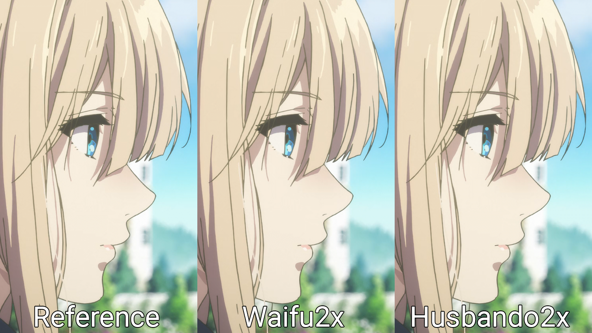
Can't see the difference between the 2? To be honest, me neither unless I zoom in. Let's do that then:
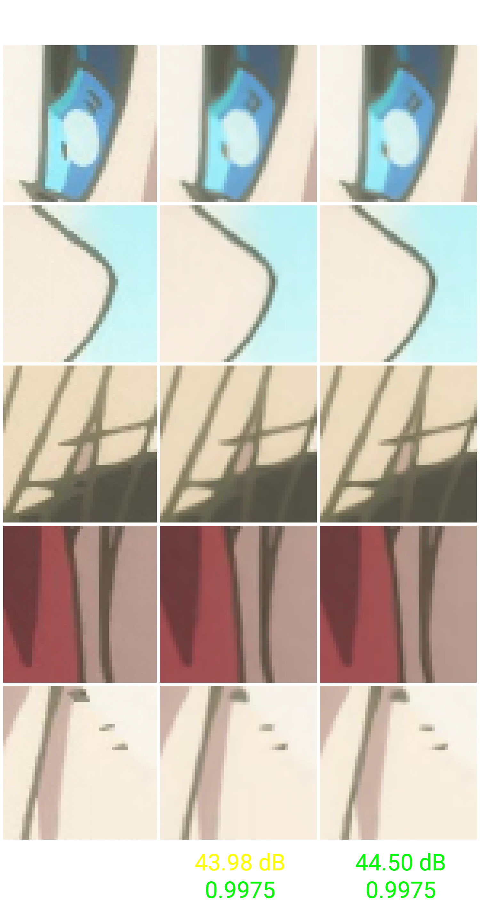
This might be extremely hard to see if you don't know where to look, but the lines are a little bit cleaner in the image generated by the small RCAN (Husbando2x). The PSNR in this test image is also 0.5 dB higher which confirms the image generated by the network are indeed closer to the ground truth pixel-wise.
Have we beaten Waifu2x then? Maybe, maybe not. Waifu2x has several models with varying levels of denoising and/or scaling factors. The network has changed its architecture a couple times and the most recent model actually employs the exact same residual channel attention block from RCAN. It makes perfect sense that the outcome here was extremely similar.
In this blog post, and in the one that came before it, we've seen how PSNR-oriented SISR CNNs work and how the images they output usually look like. These networks are indisputably better than normal FIR filters in the image upscaling problem, but training them to generate realistic pictures that do not look slightly blurry is extremely difficult due to the intrinsic nature of the loss functions used. Super-resolution is not a "closed" problem, we don't only have a single answer that's correct for a given low-resolution input. When we downscale, we're making a linear combination of N pixels and turning them into a single one. When we upscale, we have to turn each pixel into N pixels. For this reason, there are multiple possible answers and the networks usually converge between all of them.
Generative Adversarial Networks aim to "pick" one of these possible solutions that look realistic and full of details. An adversarial loss is imployed to force the SISR CNN into learning how to trick a classifier into thinking the fake images are real, and that's why these networks are called "perceptually-driven". They might not be as good in absolute numeric terms when we evaluate PSNR or SSIM, but they tend to look better to the human eye.
If I feel motivated to do it, I might attempt to train an ESRGAN-like CNN with anime content to see what we get. Will it produce better results or will the artifacts look ugly? We might never know!